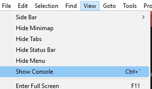
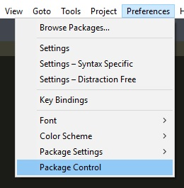
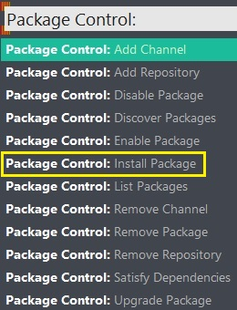

安装Package Control插件
1 打开sublime
2 选view->Show Control[快捷键 ctrl + ~ ]

3 在浏览器中搜索 sublime text 3 Package Control 安装
4 复制粘帖 Emmet 代码到命令行输入栏
5 重启 sublime
安装Package Control插件
1 sublime中选菜单项 Preferences -> Package Control

2 选 Package Control : Install Package 子菜单

3 输入 Emmet ,选 emmet 即开始安装。